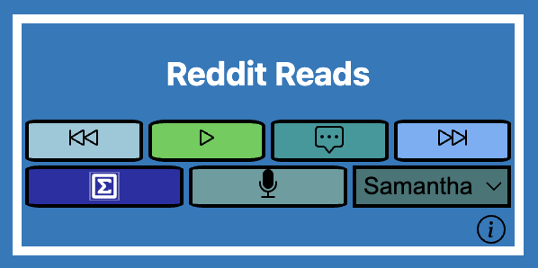
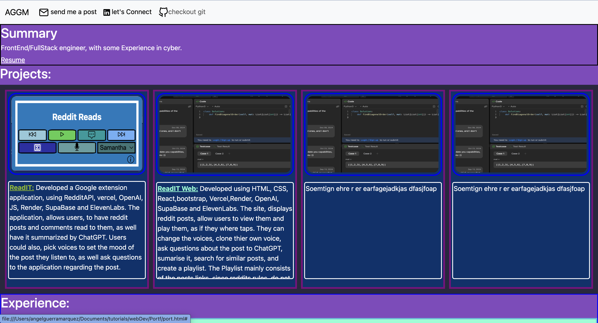

Projects:
ReadIT
Developed a Google extension application, using RedditAPI, vercel, OpenAI, JS, Render, SupaBase and ElevenLabs. The application, allows users, to have reddit posts and comments read to them, as well have it summarized by ChatGPT. Users could also, pick voices to set the mood of the post they listen to, as well ask questions to the application regarding the post.
Tech: JS, HTML,CSS, Vercel, Render,OpenAI
ReadIT Web

The site, displays reddit posts,allow users to view them and play them, as if they where taps. They can change the voices, clone thier own voice, ask questions about to ChatGPT, sumarise the post, search, and create a playlist. The Playlist mainly consists of the posts links, since reddits rules, do not allow the storage of posts information. If users, want to make a playlist or use GPT, change voices with 11Labs or clone their own, they would need to create an account, and pay a fee to do so.
Tech: React,Vercel,Render,OpenAI, Supabase
Portfolio
This, site, displays my history, accompleshes and what I can do. The image above, shows what it used to look like, when it was being developed and hosted locally, showsing the difference between what, it was and what it is now.
Tech: JS,HTML,CSS,Vercel
MusicMirror
An applicaiton that allows users to have access to their youtube account, spotify and as well, a chinese sight called, bililbili. The appliciation allows users to conduct multi search, from a single search to a list of inputs of songs. The entited purpose of this applicaiton, is, ofcourse, to allow people free range to make new playlists, from multiple platforms, as well discover new songs, locally and overseas. Developed using React Native, HTML, CSS, Vercel, and supabase.
Tech : React, API, supabase, vercel